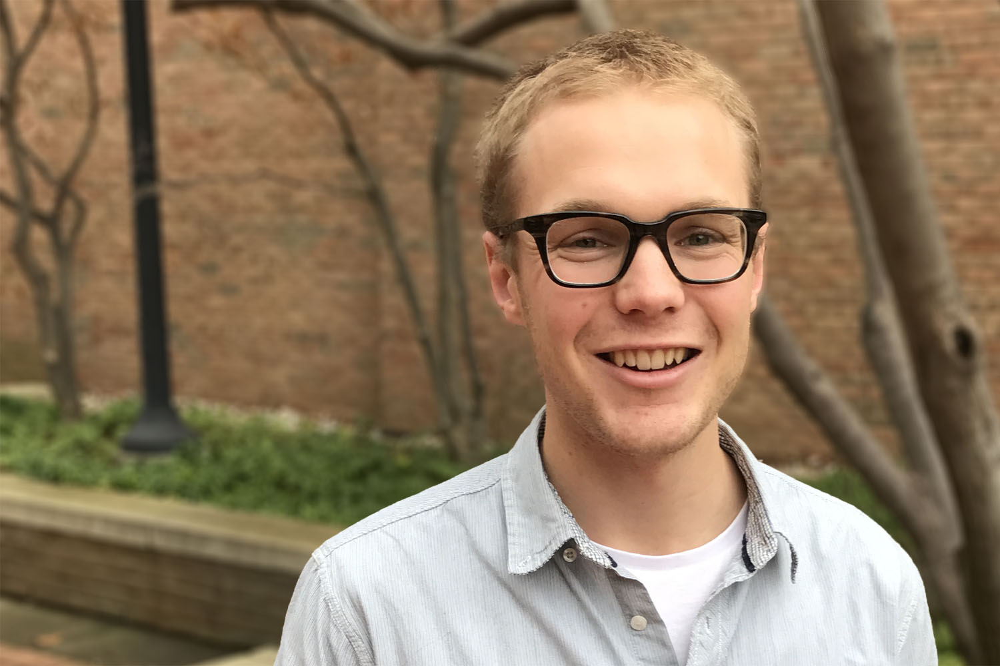

<section class="page-section clearfix">
  <div class="container">
    <div class="intro">
      
      <div class="intro-text left-0 bg-faded p-5 rounded">
        <h2 class="section-heading mb-4">
          <span class="section-heading-upper">
            Tim Williams <br>
          </span>
          <span class="section-subheading-upper">
            PhD Pre-Candidate <br>
            Industrial & Operations Engineering
          </span>
        </h2>
        <p class="mb-3">
          I’m a PhD pre-candidate in the Department of Industrial and Operations Engineering at the University of Michigan.
          I’m a part of the Guikema research group, and my research can be broadly split into two categories:
          <ul>
            <li>Modeling human decision-making with regard to food-energy-water issues; and</li>
            <li>Developing quantitative methods for categorizing urban form.</li>
          </ul>
          I’ve recently moved to the USA from New Zealand, where I studied Natural Resources Engineering at the University of Canterbury.
          My long-term goals are to advance the understanding of how coupled human-natural systems function, and how we can transition these systems in a way that promotes both the betterment of society and the prosperity of the environment.
        </p>
        <p>
          You can also visit the <a href="http://adaptingcities.org" target="_blank">Adapting Cities</a> website.
        </p>

      </div>
    </div>
  </div>
</section>
